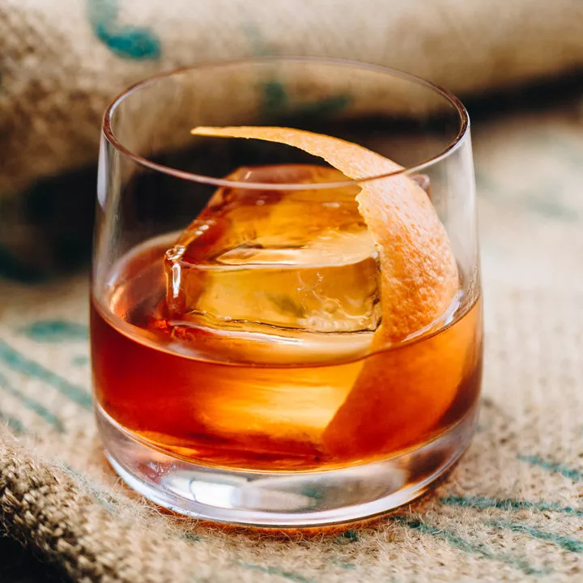

Old Fashioned

Description
The name calls for it: This amazing drink has been a must-have for thousands of bars for over 200 years.
The classic definition of cocktail called for 4 ingredients: spirits, sugar, water and bitters. The Old Fashioned has it all.
Ingredients
- 1 teaspoon sugar
- 2 oz Maker's Mark
- 3 dashes Angostura bitters
- 1 tbsp water
Orange twist for garnishing
Steps
- Add the sugar and bitters into a mixing glass, then add the water, and stir until the sugar is nearly dissolved.
- Fill the mixing glass with ice, add the bourbon, and stir until well-chilled.
- Strain into a rocks glass over one large ice cube.
- Add ice to your shaker and give it another shake
- Express the oil of an orange twist over the glass, then drop into the glass to garnish.
- Enjoy!